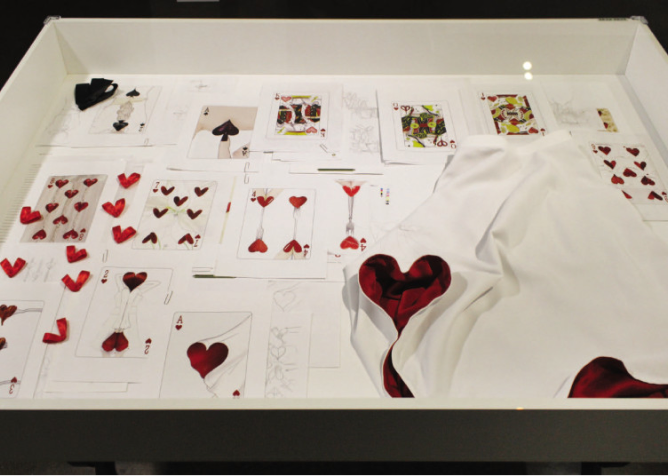
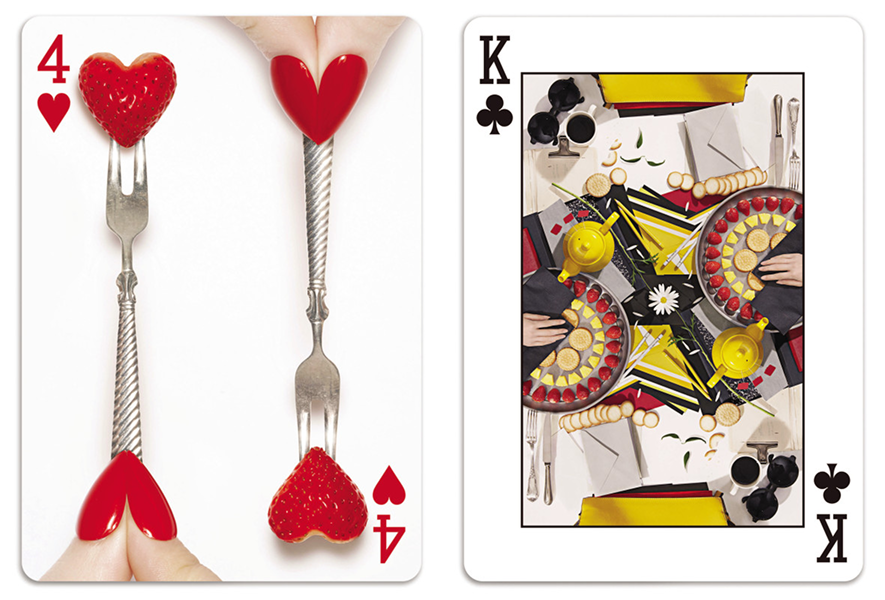
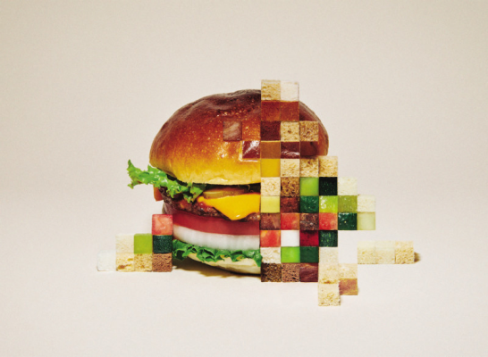
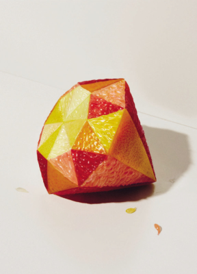
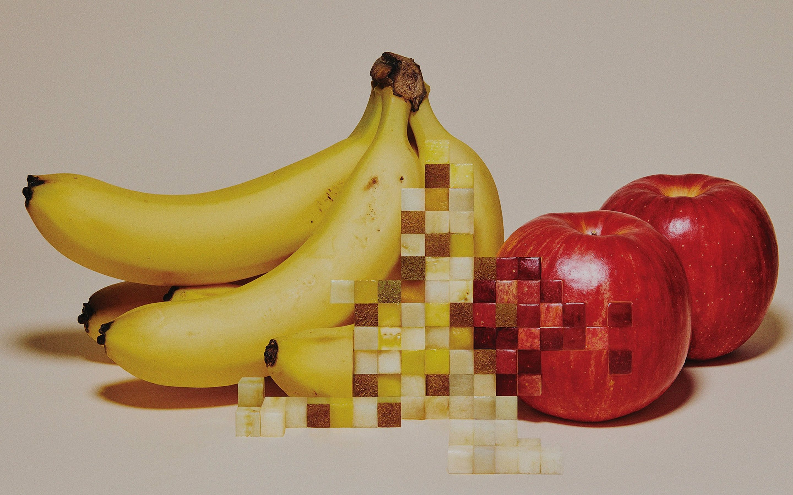

ABOUT THE EXHIBITION
인간의 손으로 빚어낸 작업

요시다 유니의 작품에서 가장 놀라운 반전은 CG가 아니고서는 불가능할 것 같은 이 작업이 실은 모두 수작업으로 이뤄졌다는 점이다. 전시장에 들어선 관객들은 가장 먼저 과일이나 음식을 활용한 를 마주치며 '그대로 멈춰라!' 라는 제목의 뜻처럼 발을 멈추게 된다. "CG가 아닌가?" 갸웃거리는 이들도 많다. 얇게 겹친 오렌지와 사과, 모자이크 처리된 사과와 바나나, 햄버거, 껍질이 녹아내리고 있는 바나나 등이 실제로 존재한다고 믿기 어렵기 때문이다.
SELECTED WORKS PREVIEW



